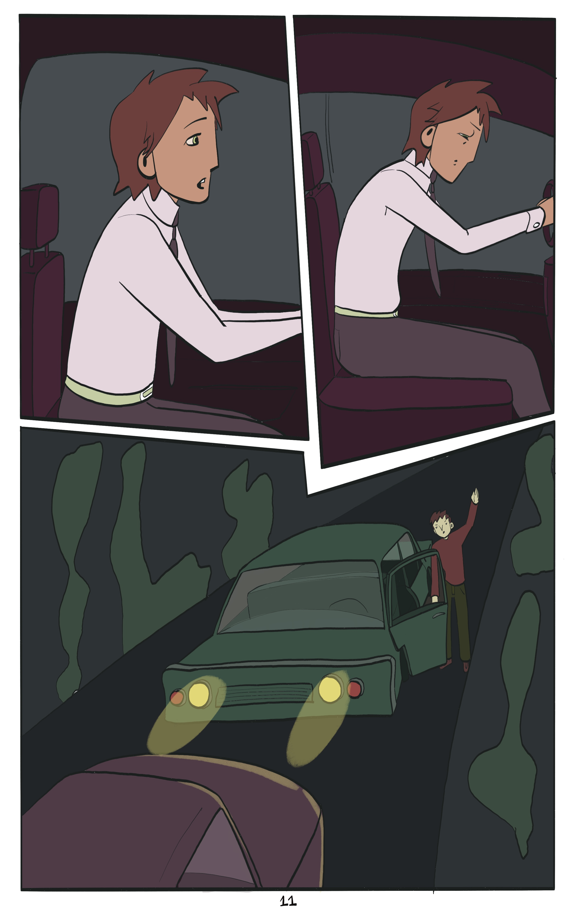

Part 2:
2a: Somnio ergo sum - comic
2b: How could I deal with dream feelings - thought experiment
Imagine the following situation: You are a 40-year-old man, settled in life, and a family with your wife of 10 years.
But since a while, your relationship with your wife is not going so well as it used to, lately you do not feel loved by your wife the same way as she used to,...
...and are suspecting that she may be having an affair. This is also a reoccurring nightmare you’ve been having recently.
One evening you decide to confront her, and voice your worries and issues you’ve been having with the relationship and ask if she is having an affair.
She is appalled by your question and feels very attacked and turns away.
It escalates in an argument...

after which you decide to have a late night drive in your car, in order to calm your nerves, as you always do.
...But during a short moment of inattentiveness, you lose focus of the traffic in front of you on the highway, and suddenly you realize that the car in front of you has suddenly hit the brakes, and you have to do the same and react quickly.
It is at this moment that you close your eyes and enter blackness, you know it’s a critical moment but are unable to do anything but wait, hoping you’ve reacted soon enough, and think nothing.
You open your eyes and realize you only just avoided crashing in the back of the car in front of you.

You sit down on a bench in front of a highway-café in order to calm down, knowing you shouldn’t be driving in this state.
As you think about your relationship you start crying, when a woman with a bright orange scarf asks: “you good?”.
It ends up in a very deep conversation about your current relationship issues.
You feel understood in a profound way and decide to keep in touch, meeting regularly in the café.
Which ultimately leads to you breaking up with your wife and starting a new relationship with the orange-scarfed-woman. You look into the eyes of your new wife and see her cry and you cannot stop but become teary yourself, as you think about all the beautiful moments you’ve been having together as time has passed.
It is at that moment that you are woken up out of your coma and see your original wife at your hospital bed.
You are confused and have an uneasy feeling seeing her, as you remember your dream clearly.
It is at this moment that you put the puzzle together: that evening when you lost focus on the highway, you did not miss the car in front of you. You were involved in a very heavy accident, which put you into a four week coma.
You only dreamt in a coma what happened from that point on.
You look at your wife that is so glad to see you awake again, and just feel overwhelmed.
But ultimately ask yourself, how do you feel towards your wife? How should you feel towards her, given the experiences you had in your dream?
In the following I will be discussing feelings resulting from dreams, dream-feelings, referencing positions from philosophy of mind. Attempting to provide one possibility to how one could treat dream-feelings.
The thought experiment above shows that even though we know dreams and the experiences we have in them are not real, they can cause very real feelings. Independent from Freudian questions, if our dreams represent our subconscious or ‘unconscious’ thoughts (e.g. Freud, 2022),, we can see from this extreme example that dreams can influence our real life just by influencing our thoughts and emotions right after we wake up. We may still think and believe that these feelings are not relevant to us right when we wake up, but even this thought itself would have been caused by a dream experience, that we would have not thought about would we have not dreamt the dream. Thus, we can find that dreams do influence our real-waking life, at least to a certain, minimal degree, depending on how the dreamer treats them.
Central to the question, how we should treat dream-feelings, is the question what real feelings and emotions are. From a theoretical standpoint Scarantino & Sousa (2021) characterize them as “a subject’s phenomenologically salient responses to significant events and as capable of triggering distinctive bodily changes and behaviors”, noting the difference between cultural descriptive definitions and theoretical/scientific proscriptive definitions. I do not want to go too much into what emotions are and their metaphysical state, but rather acknowledge that there is a difference between an emotion that stems from a real source and a non-real one, for example a dream.
I would argue that dream-feelings can be treated in the same way, as feelings resulting from imaginations, as a number of philosophers argue that experiences we have when we dream are of the same kind as experiences we have when we imagine during a waking state. For example Gregory (2023) argues that dreams are experiences that consist of sensory imaginations rather than false percepts. He defines sensory imaginations as experiences that are identical to the experiences we have in certain modality (visual, auditory, haptic, etc.) when we imagine something while awake, for example, when we imagine being on a beach when we are actually in a seminar while awake. In contrast he defines false percepts as experiences that result when our perceptions are tricking us, for example when we are hallucinating while on drugs. He brings forth roughly 4 arguments to support his view. First, a phenomenological similarity does not imply a similarity of kinds. Second, that dreaming a of phone ringing does not wake you, the person who is experiencing the dream, up, and if it were you the dreamer hallucinating it wouldn’t be so. Rather dreams are similar to how you can imagine hearing a loud sound, such as a fighter jet breaking the sound barrier without having to cover your ears. Third, that dreams can often be identified in retrospect, as they aren’t as detailed as hallucinations, rather they are sketchy, with us often not being able to remember exact details, such as the exact facial features of our dream characters, if it were a hallucination it wouldn’t be like that, he argues. Lastly, Gregory cites empirical evidence, for a correlation of the neuronal structures that are involved in dreaming and imagination, with people who have lesions in those areas, not being able to do both (Solms & Turnbull, 2018). Ofcourse it is relevant to note that Gregory argues against other philosophers such as Ichikawa (2019) and Windt (2015) who hold the position that dreams are false percepts (and that these positions also exist).
Assuming we take on this position, dream-feelings are not anymore so critical, as we deal with emotions resulting from our imaginations pretty often during our daily life, for example we can imagine how it would be if we would jump off of a very high bridge, when we are standing right by the ledge, and this imagination actually leads to very real fear. I suggest that we have no difficulty in dealing with these feelings as we can attribute them to our imaginations as their source and know that imagination is not reality. In conclusion, I observe the difficulty to deal with dream-feelings to partly stem from mysteriousness concerning their meaning and connections to our real life and from the lack of clear scientific explanations for dreams. And most importantly, from the fact that we sometimes believe they are real while we are in a dream (dream scepticism, e.g. see Schwitzgebel who is not sure if he is not dreaming, 2017), which is unlike imagining, as we know that or we can “check” if we have another real perception in order to identify an imagination as an imagination and not as reality.
References
Freud, S. (2022). The interpretation of dreams. DigiCat.
Scarantino, Andrea and Ronald de Sousa, "Emotion", The Stanford Encyclopedia of Philosophy (Summer 2021 Edition), Edward N. Zalta (ed.), URL =
https://plato.stanford.edu/archives/sum2021/entries/emotion/.
Gregory, D. (2023). Imagining a Way Out of Dream Skepticism. Erkenntnis, 1-18.
Solms, M., & Turnbull, O. (2018). The brain and the inner world: An introduction to the neuroscience of subjective experience. Routledge.
Ichikawa, J. (2009). Dreaming and imagination. Mind & Language, 24, 103–121.
Windt, J. M. (2015). Dreaming: A conceptual framework for philosophy of mind and empirical research.
Schwitzgebel, E. (2017). 1% Skepticism. Noûs, 51(2), 271-290.